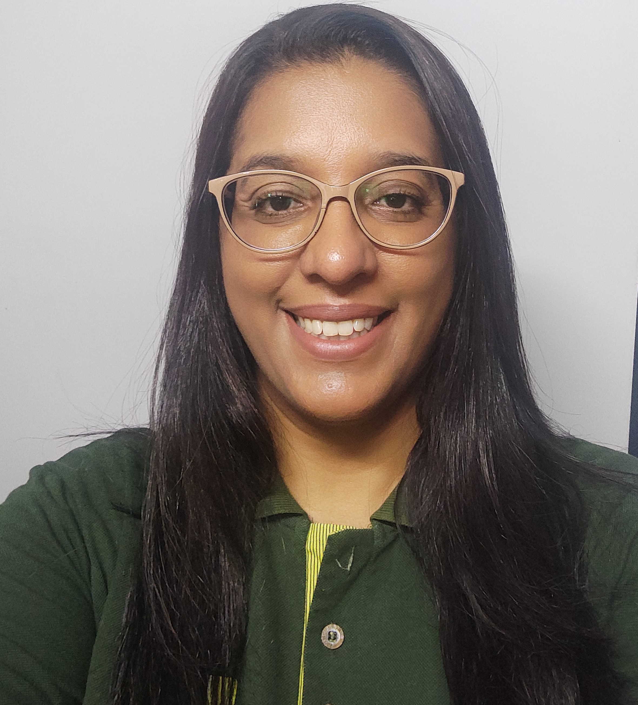

Thaís da Silva Mello Ecard Pinto
Arquivista/ Estudante de Programação
Sou amante do conhecimento e por conta desse amor, muitas possibilidades podem se abrir diante de mim!
Casada, mãe da Isadora e do Isaque, busco meu desenvolvimento profissional e pessoal para proporcionar o melhor para minha família.
Formada em Arquivologia, pós graduanda em Ciência da Informação e novas tecnologias e com curso preparatório em programação, percebi que quero muito casar minha graduação com a tecnologia.